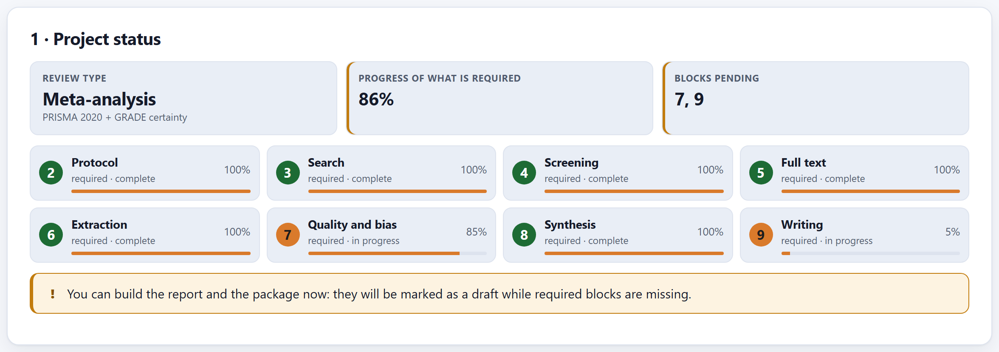
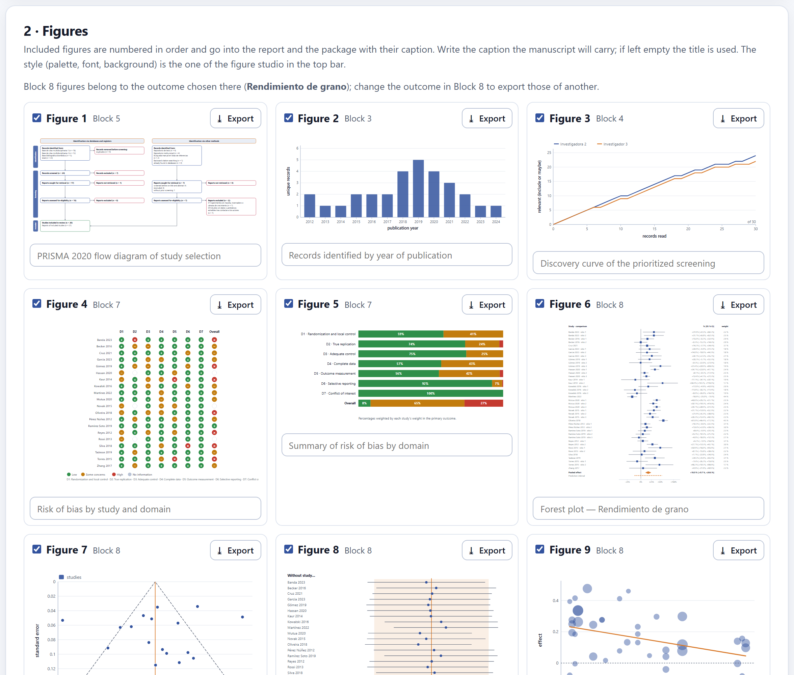
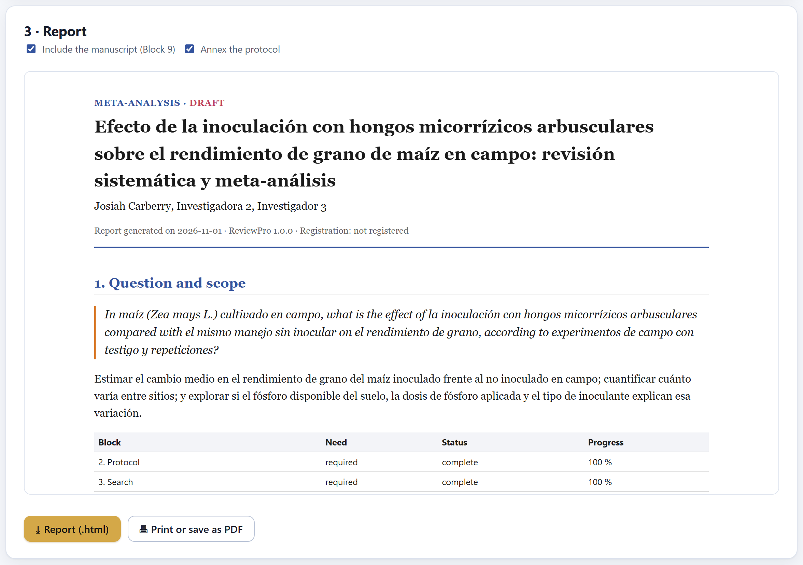
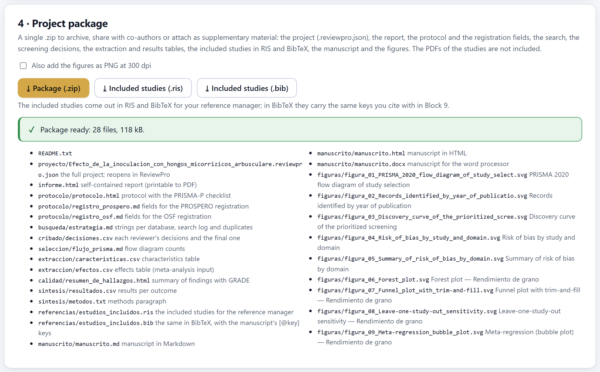

Everything you have done, ready to leave the app: where the project stands against what its review type needs; the figures of every block in one place, numbered and with their caption; a single-file report that opens in any browser and prints to PDF; and a .zip with the project file that reproduces the whole review, plus the manuscript, the tables, the references and the figures.

Block 10 starts with an inventory. Each working block (2 to 9) appears as required, optional or not applicable according to the review type—the same ones as in the route on the home page—, with its status (complete, in progress or not started) and its progress. A click on a card takes you to its block.
| Block | How its progress is measured |
|---|---|
| 2 Protocol | The complete sections of the protocol review (Section 2.8). |
| 3 Search | There is a strategy and there are imported records. |
| 4 Screening | The records with a final decision (or unread after the stopping rule). |
| 5 Full text | The reports resolved; complete when nothing is pending. |
| 6 Extraction | The studies with effects (in a meta-analysis) or with some extracted datum. |
| 7 Quality and bias | The studies with a final overall judgment. |
| 8 Synthesis | The outcomes the model was able to pool. |
| 9 Writing | The sections that reach the minimum of their word target. |
While something required is missing, the app says so and the report and the package come out marked as DRAFT; you can generate them anyway, to share your progress.

Here are the figures of every block: the PRISMA diagram, the records by year, the screening curve, the traffic-light plot and the risk-of-bias summary, the forest plot, the funnel, the sensitivity plot, the bubbles, the gap map and the timeline. The ones that already have content appear, are numbered in order and enter the report and the package with their caption.
The style is that of the figure studio in the top bar: palette, typeface, line widths and background change all the figures at once. Those of Block 8 belong to the outcome chosen there; to export those of another, change it in Block 8 and come back. If you changed something in another block, ↻ Refresh from the blocks redraws the gallery.
| If the journal accepts vector figures, or you are going to retouch it | then SVG: it does not pixelate and can be edited in any vector drawing program. |
| If it asks for raster images | then PNG at 300 dpi (600 if requested); the resolution is written into the file, which is what the journal reads. |
| If the forest plot has many effects | then export at full page size and check that the labels are legible in print. |

The report is a single .html file, with no dependencies, that reads in any browser and prints to PDF with 🖶 Print or save as PDF. It serves to share the state of the review with co-authors, with a committee or with whoever asks for the supplementary material. Its sections:
| Section | What it contains |
|---|---|
| Heading | Review type (and “DRAFT” if something required is missing), title, authors, date, software version and registration. |
| 1 · Question and scope | The question, the objectives, the status of each block and the reporting guideline. |
| 2 · Search | The search report from Block 3 and the figure of records by year. |
| 3 · Study selection | The flow in one sentence, the agreement between reviewers, the PRISMA diagram and the screening curve. |
| 4 · Included studies | The characteristics table. |
| 5 · Risk of bias | The tool and the two plots. |
| 6 · Synthesis | The results per outcome, the methods paragraph and the figures of Block 8. |
| 7 · Certainty of the evidence | The summary of findings with GRADE. |
| 8 · Manuscript | The text of Block 9 with citations and references (Include the manuscript checkbox). |
| Annex A · Protocol | The protocol document (Annex the protocol checkbox). |
All the numbers come from the project at the moment it is generated. If you change something afterwards, generate the report again.

⤓ Package (.zip) gathers into a single file everything the review produced, in folders:
| File | What it is |
|---|---|
README.txt | What is in the package and how to reopen the project. |
proyecto/….reviewpro.json | The full project: it opens in Block 2 of any copy of ReviewPro and reproduces every number. |
informe.html | The report of Section 10.3. |
protocolo/ | The protocol and the fields for the PROSPERO and OSF registrations. |
busqueda/, cribado/, seleccion/ | The strategy and its log, all the screening decisions and the counts of the flow diagram. |
extraccion/, calidad/, sintesis/ | The characteristics and effects tables, the summary of findings, the results per outcome and the methods paragraph. |
referencias/ | The included studies in RIS and BibTeX, with the manuscript’s citation keys. |
manuscrito/ | The manuscript in Word, HTML and Markdown. |
figuras/ | The included figures in SVG, numbered and with their caption as the title; with the checkbox, also as PNG at 300 dpi. |
The PDFs of the studies do not go into the package: the project only stores where each one is. The ⤓ Included studies (.ris) and (.bib) buttons download only the references, for your reference manager.
That someone else can see every decision and repeat every calculation: the search as it was run, why each record was excluded, which value was extracted from each article and from where, how each study was judged and with which model they were pooled. The project file stores all of that, and the calculations are deterministic: the same project gives the same numbers on any computer and offline. The package was assembled by the app itself, byte by byte, following the public specification of the .zip format, without third-party libraries.
“There are no figures yet”, the draft warning and, when the package is assembled, how many files came out or the error if something failed.
| If the status says DRAFT | then finish the pending blocks, or explain in the manuscript why they do not apply. |
| If the checker of Block 9 flags claims | then support them or rewrite them before submitting. |
| If the PRISMA checklist has items marked “missing” | then add them: they are the ones referees check first. |
| If you changed data after exporting | then export the manuscript, the figures, the report and the package again: each exported file is a snapshot of the project at that moment. |
| If the journal asks for data and code | then attach the package: the project file and the tables are the data, and ReviewPro with its version is the code. |
This closes the ten blocks. The appendices follow: the files the app reads and writes, the decision rules gathered together, the glossary, what to do when something goes wrong, the references and the license.